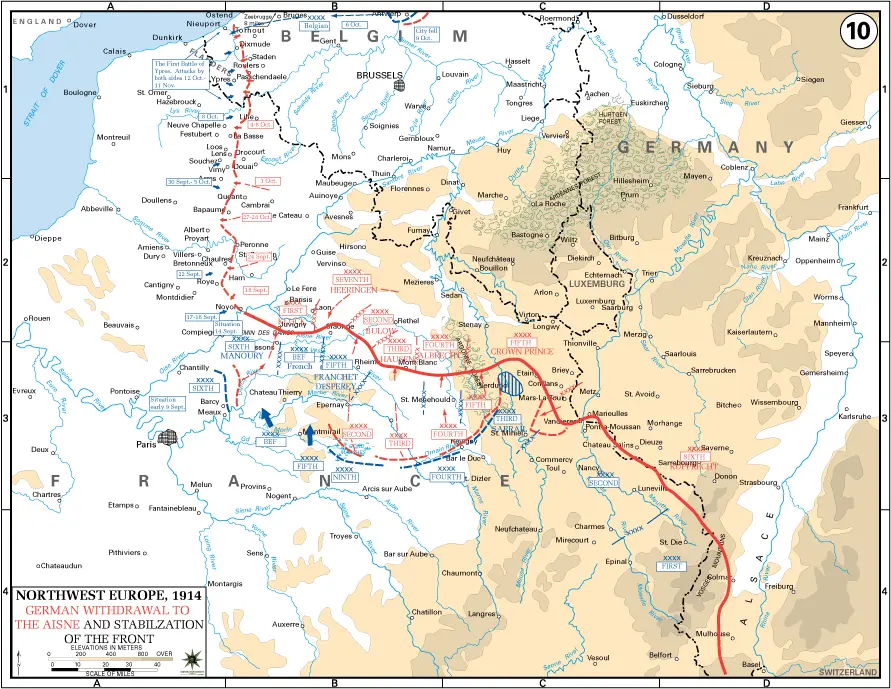
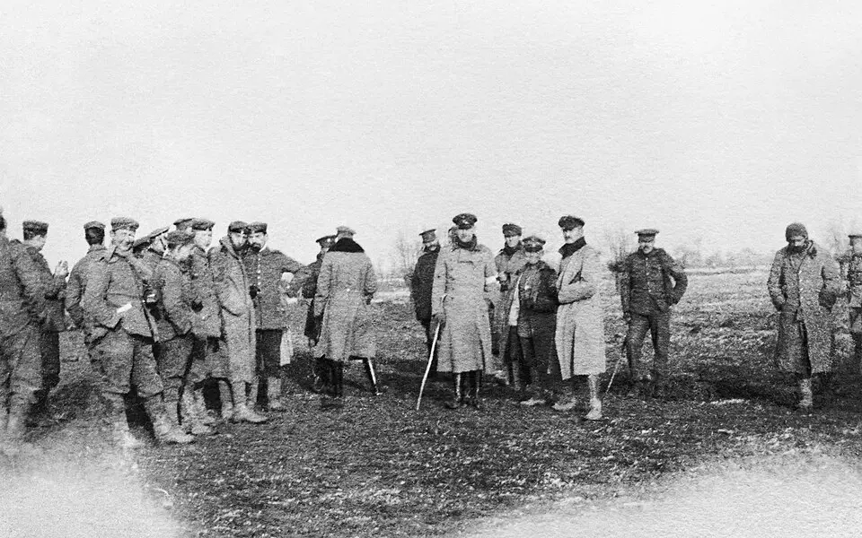
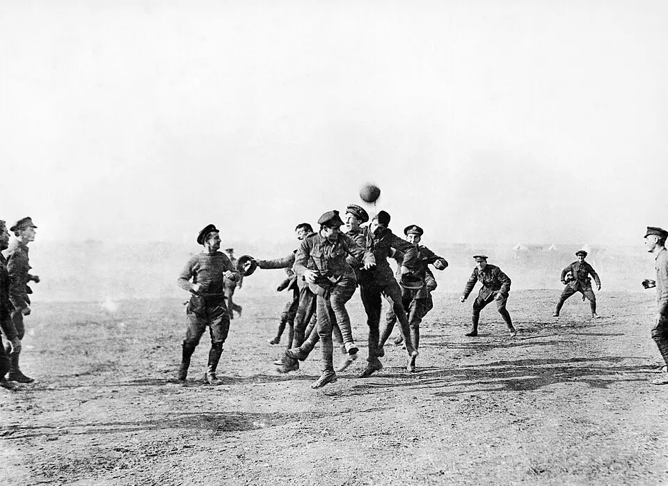
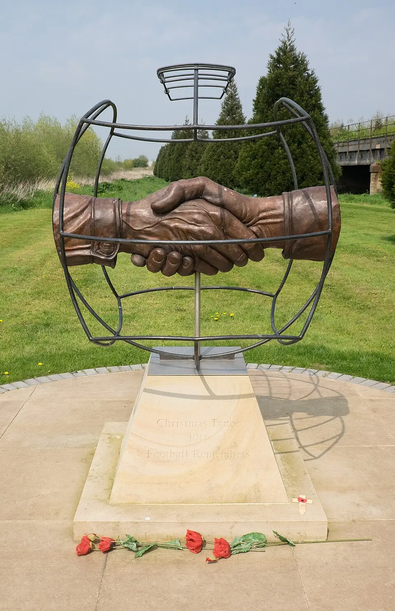

Hưu chiến Giáng sinh 1914: lính hai bên chiến hào bước ra bắt tay nhau
Giáng sinh năm 1914, khoảng 100.000 lính Anh và Đức trên Mặt trận phía Tây tự ngừng bắn. Họ hát, trao quà, chôn người chết, và ở vài nơi, đá bóng.

Ngày 7/12/1914, Giáo hoàng Benedict XV kêu gọi các chính phủ tham chiến ngừng bắn chính thức nhân dịp Giáng sinh. Cả hai bên đều từ chối. Hơn hai tuần sau, chính những người lính dưới chiến hào đã tự làm điều đó, không có lệnh của ai.
Vì sao lại có hưu chiến?
Thế chiến I mới bắt đầu được năm tháng. Sau cuộc "chạy đua ra biển" và Trận Ypres thứ nhất không phân thắng bại, mặt trận đông cứng thành hai hệ thống chiến hào. Ở nhiều chỗ, hai bên gần đến mức có thể gọi nhau. Nhiều lính Đức từng sống ở Anh, nhất là London, và nói được tiếng Anh. Lính Anh còn ghi lại chuyện lính Đức hỏi thăm kết quả các giải bóng đá.
Đại úy Robert Miles mô tả đó là một cuộc hưu chiến không ai sắp đặt, không ai cho phép, nhưng ai cũng hiểu và tôn trọng.
Một ngày không có lệnh


Theo ước tính, khoảng 100.000 lính Anh và Đức đã tham gia những cuộc ngừng bắn không chính thức. Lính Đức đặt nến trên chiến hào và trên những cây thông Noel, rồi hát thánh ca. Lính Anh hát đáp lại. Hai bên gọi nhau chúc mừng Giáng sinh, rồi bước ra vùng đất không người.
Họ trao đổi đồ ăn, thuốc lá, rượu, cúc áo, mũ. Pháo im tiếng. Các toán mai táng đưa xác đồng đội mới chết về sau phòng tuyến, có nơi tổ chức lễ chung. Ở nhiều đoạn, hưu chiến kéo dài qua đêm Giáng sinh, có nơi đến tận Năm mới.
Thư từ là nguồn chính. Chuẩn tướng Walter Congreve kể một đại úy của ông đã hút xì gà với tay súng giỏi nhất quân Đức, một người chưa quá 18 tuổi. Binh nhì Henry Williamson, 19 tuổi, viết cho mẹ ngày 26/12 rằng tẩu của anh đang chứa thuốc lá Đức. Đại úy Robert Miles mô tả đó là một cuộc hưu chiến không ai sắp đặt, không ai cho phép, nhưng ai cũng hiểu và tôn trọng. Thư của ông được đăng báo tháng 1/1915, sau khi ông tử trận ngày 30/12/1914.
Có thật là đá bóng?


Đây là phần cần đọc kỹ. Ngày 1/1/1915, báo The Times đăng thư của một bác sĩ thuộc Lữ đoàn Súng trường kể về một trận bóng giữa hai bên trước chiến hào. Có lời kể ghi lính Argyll and Sutherland Highlanders thắng 4 bàn thua 1, có nơi dùng hộp thịt bò làm bóng. Một tác giả gần đây đếm được 29 lời kể về bóng đá.
Nhưng giới sử học không thống nhất. Năm 1984, Malcolm Brown và Shirley Seaton kết luận rằng có lẽ đã có những cố gắng tổ chức trận đấu nhưng không thành vì mặt đất quá xấu, còn các lời kể đương thời hoặc là nghe kể lại, hoặc là những lần đá bóng ngẫu hứng. Phiên bản tỉ số 3 bàn thua 2 nghiêng về phía Đức lại đến từ một truyện năm 1962 của nhà văn Robert Graves, có yếu tố hư cấu. Một bức ảnh hay bị nhầm là trận bóng năm 1914 thật ra chụp ngày 25/12/1915 gần Thessaloniki, Hy Lạp, giữa chính lính Anh với nhau.
Sau Giáng sinh


Không phải ai cũng vui. Tướng Horace Smith-Dorrien ra lệnh cấm giao tiếp thân thiện với quân Đức. Một hạ sĩ trong Trung đoàn Bộ binh Dự bị Bavaria số 16 cũng phản đối hưu chiến: Adolf Hitler. Ngày 29/12/1914, phía Đức ra lệnh coi mọi sự tiếp cận kẻ thù là phản quốc.
Báo chí Anh im lặng cả tuần, cho đến khi tờ New York Times ở nước Mỹ trung lập phá vỡ lệnh cấm ngầm vào ngày 31/12. Giáng sinh năm 1915, chỉ huy phe Đồng minh ra lệnh đột kích và pháo kích suốt ngày để chuyện cũ không lặp lại. Vài cuộc ngừng bắn ngắn vẫn xảy ra. Một đại đội trưởng Vệ binh Scotland, Sir Iain Colquhoun, bị đưa ra tòa án binh vì cho lính hai bên cùng chôn người chết. Đến năm 1916, sau những tổn thất nặng nề năm 1915, chính lính tráng cũng không còn muốn hưu chiến.
Ký ức thì ở lại. Bộ phim Pháp Joyeux Noël năm 2005 dựng lại sự kiện qua mắt lính Pháp, Scotland và Đức, và được đề cử Oscar phim nói tiếng nước ngoài. Ngày 11/11/2008, một đài tưởng niệm được khánh thành ở Frelinghien, Pháp, và lính Tiểu đoàn 1 Royal Welch Fusiliers lại đá một trận với Tiểu đoàn 371 của Đức ở đó: đội Đức thắng 2 bàn thua 1. Năm 2014, Hoàng tử William khánh thành đài tưởng niệm Football Remembers ở Staffordshire, Anh.
Cuộc hưu chiến Giáng sinh năm 1914 là có thật và được ghi trong rất nhiều thư từ. Những trận bóng có lẽ cũng có, nhưng nhỏ và lộn xộn hơn nhiều so với hình ảnh người đời sau lưu giữ.